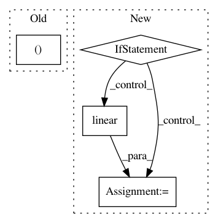

8030eeca74b6634f2a60168516573912aaa9cd65,model/modeling.py,BertForSequenceClassification,forward,#BertForSequenceClassification#Any#Any#Any#Any#,891
Before Change
self.apply(self.init_bert_weights)
def forward(self, input_ids, token_type_ids=None, attention_mask=None, labels=None):
_, pooled_output = self.bert(input_ids, token_type_ids, attention_mask, output_all_encoded_layers=False)
pooled_output = self.dropout(pooled_output)
logits = self.classifier(pooled_output)
After Change
def forward(self, input_tensor, attention_mask):
self_output = self.self(input_tensor, attention_mask)
attention_output = self.output(self_output, input_tensor)
return attention_output
class BertIntermediate(nn.Module):
def __init__(self, config):
super(BertIntermediate, self).__init__()
self.dense = nn.Linear(config.hidden_size, config.intermediate_size)
In pattern: SUPERPATTERN
Frequency: 3
Non-data size: 4
Instances
Project Name: NVIDIA/sentiment-discovery
Commit Name: 8030eeca74b6634f2a60168516573912aaa9cd65
Time: 2018-11-20
Author: raulp@nvidia.com
File Name: model/modeling.py
Class Name: BertForSequenceClassification
Method Name: forward
Project Name: NVIDIA/sentiment-discovery
Commit Name: ef87f1a071c6b8ca5607874a1a7d77d8a1ab2821
Time: 2018-11-19
Author: raulp@nvidia.com
File Name: model/sentiment_classifier.py
Class Name: SentimentClassifier
Method Name: forward
Project Name: HyperGAN/HyperGAN
Commit Name: 4c60119647c7c5347a6d31265c223137c7ddd896
Time: 2016-12-17
Author: martyn@255bits.com
File Name: lib/gan.py
Class Name:
Method Name: discriminator